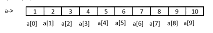
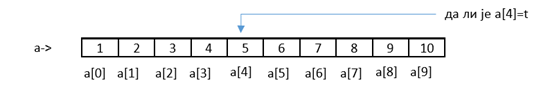
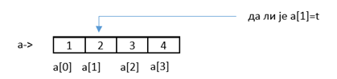

Претраживање низова#
Имамо низ и желимо да видимо да ли се у њему налази неки елемент. Шта ћемо урадити. Најједноставнији начин је упоређујемо вредност траженог елемента са сваким појединачним елементом у низу.
Али шта ако?
не постоји елемент у низу
имамо два или више иста елемената у низу
имамо низ са огромним бројем елемената
низ није уређен
Значи да закључимо:
задатак претраживања је проналажење елемента низа који задовољава неки унапред задат услов.
претраживањем се утврђује да ли задати елеменат постоји у низу вредности и ако постоји који је његов индекс односно позиција.
најбоље претраживање је оно које има најмањи број поређења које је потребно извести у поступку тражења задатих вредности.
Имамо две врсте претраживања којима ћемо се бавити:
секвенцијално претраживање
бинарно претраживање
Кренимо редом.
Секвенцијално претраживање#
Сетимо се како су некада ваши родитељи слушали музику. Имали су уређај који се вокмен и који је користио касете. На њима су се налазиле снимљене песме. На касети је могло бити снимљено више десетина песама. Сретну друга и кажу „Дај пусти ми ону..”
Шта онда. Песма је могла бити прва на реду а могла је бити и послењдња. Значи пустали би једну по једну док не би нашли „ону праву „.
Или рецимо давно заборављени грамофон.
Уколико имамо списак песама као код грамофонских плоча није проблем тачно знамо на којој је позицији односно индексу. А шта ако немамамо списак Поново морамо пустати једну по једну док не нађемо жељену песму.
Исти случај је код низова.
Низ може бити уређен или неуређен. У низу не мора да постоји тражени елемент али може да их постоји и више. Много питања, хајде да дамо одговоре
Секвенцијално претраживање неуређеног низа
Дефинисали смо један неуређени низ a од n елемената

Претпоставимо да тражимо елемент t који има одређену вредност. Да пробамо да направимо циклус који ће приступити сваком елементу и проверити да ли има вредност t.
Шта може да се утврди. Најједноставније је да се одреди индекс на коме се налази та вредност.
А шта ако не постоји та вредност у низу?
Управо из тог разлога уводимо промењиву indeks и додељујемо јој почетну вредност -1. Уколико нађемо елемент промењива indeks добија вредност индекса тог елемента у супротном вредност indeks ће остати -1 што значи да елемент није пронађен у низу.
Овај начин размишљања се користи у већини програмских језика.
Напишите следећи код и пробајте да схватите шта он ради
#include <stdio.h>
main ()
{
int a[100],n,t,i,indeks=-1;
printf("Unesi koliko elemenata niza unosis ");
scanf("%d",&n);
printf ("Unesi %d elemenat niza: \n",n);
for (i=0; i<=n-1; i++)
{
printf ("a[%d]=",i);
scanf ("%d",&a[i]);
}
printf("Unesi elemenat koji trazis ");
scanf("%d",&t);
for(i=0;i<n;i++)
{
if(a[i]==t)
indeks = i;
}
if(indeks==-1)
printf("U nizu ne postoji trazeni element");
else
printf("Pronadjen je element na rednom broju %d odnosno sa indeksom %d", indeks+1,indeks);
}
Први циклус служи да се унесу елементи низа док се другим циклусом приступа сваком елементу низа и проверава се да ли је елемент једнак траженој вредности. Уколико јесте промењива indeks добија вредност индекса елемента који је једнак траженој вредности.
Ако ниједан елемент није једнак траженој вредности indeks остаје -1 и то ћемо искористити у последњем if else услову.
Ако се тражена вредност налази у низу добићемо на излазу
Излаз:
Unesi koliko elemenata niza unosis 5
Unesi 5 elemenat niza:
a[0]=5
a[1]=1
a[2]=2
a[3]=2
a[4]=3
Unesi elemenat koji trazis 2
Pronadjen je element na rednom broju 4 odnosno sa indeksom 3
Приметићете да се упоређивање не прекида када се пронађе први индекс који задовољава услов већ се претраживање наставља до краја.
Да видимо шта се дешава ако се тражена вредност не налази у низу.
Излаз:
Unesi koliko elemenata niza unosis 5
Unesi 5 elemenat niza:
a[0]=5
a[1]=1
a[2]=2
a[3]=2
a[4]=3
Unesi elemenat koji trazis 6
U nizu ne postoji trazeni element
Задатак: Пробај да промениш део кода тако да ти преброји колико има тражених елемената у низу
Решење:
#include <stdio.h>
main ()
{
int a[100],n,t,i,indeks=-1,br=0;
printf("Unesi koliko elemenata niza unosis ");
scanf("%d",&n);
printf ("Unesi %d elemenat niza: \n",n);
for (i=0; i<=n-1; i++)
{
printf ("a[%d]=",i);
scanf ("%d",&a[i]);
}
printf("Unesi elemenat koji trazis ");
scanf("%d",&t);
for(i=0;i<n;i++)
{
if(a[i]==t)
{
indeks = i;
br++;
}
}
if(indeks==-1)
printf("U nizu ne postoji trazeni element");
else
printf("Pronadjeno je %d elemenata a poslednji je na rednom broju %d odnosno sa indeksom %d",br,indeks+1,indeks);
}
Излаз:
Unesi koliko elemenata niza unosis 5
Unesi 5 elemenat niza:
a[0]=5
a[1]=1
a[2]=2
a[3]=2
a[4]=3
Unesi elemenat koji trazis 2
Pronadjeno je 2 elemenata a poslednji je na rednom broju 4 odnosno sa indeksom 3
Ово је био пример једног неуређеног низа.
Секвенцијално претраживање уређеног низа
Посматрајмо један уређен низ.

Напишите код као у предходном случају, али променимо га тако да се извршавање прекида када нађемо тражени елемент
#include <stdio.h>
main()
{
int a[100], n, t, i, indeks = -1;
printf("Unesi koliko elemenata niza unosis ");
scanf("%d", &n);
printf("Unesi %d elemenat niza: \n", n);
for (i = 0; i <= n - 1; i++)
{
printf("a[%d]=", i);
scanf("%d", &a[i]);
}
printf("Unesi elemenat koji trazis ");
scanf("%d", &t);
for (i = 0; i < n; i++)
{
if (a[i] == t)
{
indeks = i;
break;
}
}
if (indeks == -1)
printf("U nizu ne postoji trazeni element");
else
printf("Pronadjen je element na rednom broju %d odnosno sa indeksom %d", indeks + 1, indeks);
}
Примећујемо да циклус за упоређивање променили тако што смо додали наредбу break када се пронађе тражена вредност
Ако се тражена вредност налази у низу добићемо на излазу:
Излаз:
Unesi koliko elemenata niza unosis 5
Unesi 5 elemenat niza:
a[0]=1
a[1]=2
a[2]=2
a[3]=3
a[4]=8
Unesi elemenat koji trazis 2
Pronadjen je element na rednom broju 2 odnosno sa indeksom 1
Питање:
Да ли се ова претрага може урадити помоћу while или do while циклуса. Ако може написати код за претраживање?
Одговор: Може
#include <stdio.h>
main()
{
int a[100], n, t, i, indeks = -1;
printf("Unesi koliko elemenata niza unosis ");
scanf("%d", &n);
printf("Unesi %d elemenata niza: \n", n);
for (i = 0; i < n; i++)
{
printf("a[%d]=", i);
scanf("%d", &a[i]);
}
printf("\nUnesi broj koji trazimo u nizu: ");
scanf("%d", &t); i = 0;
do
{
if (a[i] == t)
indeks = i;
i++;
} while (i < n && indeks < 0);
if (indeks == -1)
printf("U nizu ne postoji trazeni element");
else
printf("Pronadjen je element na rednom broju %d odnosno sa indeksom %d", indeks + 1, indeks);
}
На излазу као и у предходном случају добијамо редни број односно индекс првог пронађеног елемента у низу.
Излаз:
Unesi koliko elemenata niza unosis 5
Unesi 5 elemenata niza:
a[0]=1
a[1]=2
a[2]=2
a[3]=3
a[4]=8
Unesi broj koji trazimo u nizu: 2
Pronadjen je element na rednom broju 2 odnosno sa indeksom 1
У случају да не постоји елемент добићемо одговор да у „Низу не постоји тражени елемент”
Секвенцијално претраживање можемо користити када број елемената низа није велики.
Бинарно претраживање#
Шта можемо да урадимо када имамо огроман број елемената нпр милион или милијарду. Секвенцијалним начином то може да потраје.
На пример имамо сто хиљада елемената и баш је сто хиљадити тај. То значи сто хиљада упоређивања а то траје.
Хајде да размислимо. Посматрајмо један уређени целобројни низ a[10]={1,2,3,4,5,6,7,8,9,10}. Тражимо на пример вредност t=2.
{kind=link}
Да пробамо. Поделимо низ на пола и проверимо да ли је тражена вредност t баш једнака тој вредности елемента низа са индексом који се налази у средини низа.
Тражимо индекс елемента који се налази у средини низа srednji.
srednji је индекс елемента у средини, donji је индекс првог елемента низа а gornji је индекс последњег елемента у низу.
Рачунамо srednji=(donji+gornj)/2. У нашем случају srednji=(0+9)/2.
С обзиром да је у питању целобројно дељење индекс елемента на средини је srednji=4.
{kind=link}
Ако је тражена вредност t једнака вредности елемента на том индексу одлично прекидамо претраживање и тражени индекс је баш тај.
А шта ако није?
Проверавамо да ли је a[srednj]==t. У нашем случају видимо да то није тачно па настављамо даље.
Пошто је низ уређен тражени елемент се налази или лево или десно од средине. Проверавамо да ли се тражени елемент већи или мањи од елемента у средини.
Ако је низ растући и ако је a[srednji]>t то значи да се елемент налази са леве стране средњег елемента у супротном он се налази са десне стране.
Код нас је a[srednji]>t. Сада одбацујемо све елементе са десне стране јер знамо да се тражени елемент налази лево од средине.
Преостали низ поново делимо на пола. Сада је donji=0 gornji=srednji-1=3
Рачунамо srednji=(donji+gornji)/2. У нашем случају srednji=(0+3)/2. Као и у предходном случају у питању целобројно дељење и индекс елемента на средини је srednji =1.
{kind=link}
Проверавамо да ли је a[srednji]==t. У нашем случају видимо да је то сада тачно и прекидамо претрагу јер смо нашли тражену вредност на индексу srednji =1.
Задатак: Пробајте ово исто да урадите али да је тражена вредност t=6.
Бинарно претраживање је корисно када имате огроман број елемената. На пример ако имате 1000 елемената. При првој подели број елемената где се тражи вредност пада на 500. При следећој на 250 и тако редом.

ОБРАТИ ПАЖЊУ Бинарно претраживање може да се ради само код уређеног низа (било да је растући ии опадајући)
Како би изгледао циклус који ради дељење низа на пола и проверу где се налази тражени елемент.
donji=0;
gornji=n-1;
i=0;
while(donji<=gornji&&indeks<0)
{
srednji=(donji+gornji)/2;
if(a[srednji]==t)
indeks=srednji;
if(t<a[srednji])
gornji=srednji-1;
else
donji=srednji+1;
}
Задатак: Користећи while циклус изнад написати програм за бинарно претраживање уређеног низа.
Решење:
#include <stdio.h>
main ()
{
int a[100],n,t,i,indeks=-1;
int donji,gornji,srednji;
printf("Unesi koliko elemenata niza unosis ");
scanf("%d",&n);
printf ("Unesi elemente u rastucеm redosledu:\n");
for (i=0; i<=n-1; i++)
{
printf ("a[%d]=",i);
scanf ("%d",&a[i]);
}
printf("Unesi elemenat koji trazis ");
scanf("%d",&t);
donji=0;
gornji=n-1;
i=0;
while(donji<=gornji&&indeks<0)
{
srednji=(donji+gornji)/2;
if(a[srednji]==t)
indeks=srednji;
if(t<a[srednji])
gornji=srednji-1;
else
donji=srednji+1;
}
if (indeks>=0)
printf("Trazeni element postoji sa indeksom %d",indeks);
else
printf("Trazeni element ne postoji");
}
Можете приметити да и овде користимо промењиву indeks и додељујемо јој почетну вредност -1. То значи да уколико он не промени вредност приликом подела тражени елемент не постоји у низу.
Излаз:
Unesi koliko elemenata niza unosis 15
Unesi elemente u rastucm redosledu:
a[0]=1
a[1]=2
a[2]=4
a[3]=5
a[4]=5
a[5]=6
a[6]=7
a[7]=8
a[8]=9
a[9]=11
a[10]=23
a[11]=45
a[12]=46
a[13]=78
a[14]=99
Unesi elemenat koji trazis 5
Trazeni element postoji sa indeksom 3
Домаћи: Пробај овај задатак да допуниш тако што ћеш пре бинарног претраживања проверити да ли је низ уређен. Уколико није исписати поруку „Пре бинарног претраживања низ мора да се уреди”.